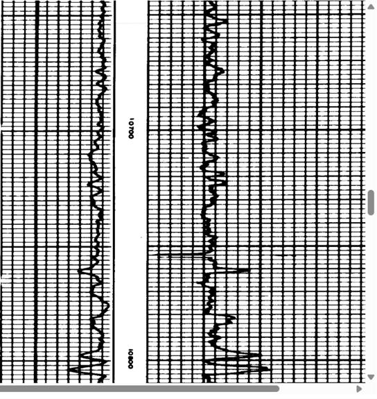
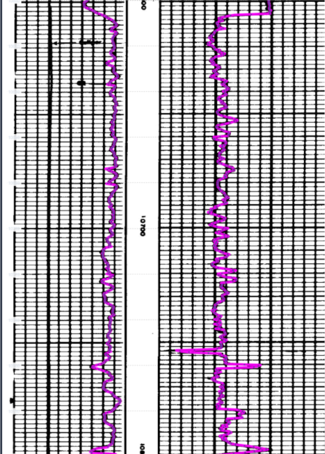
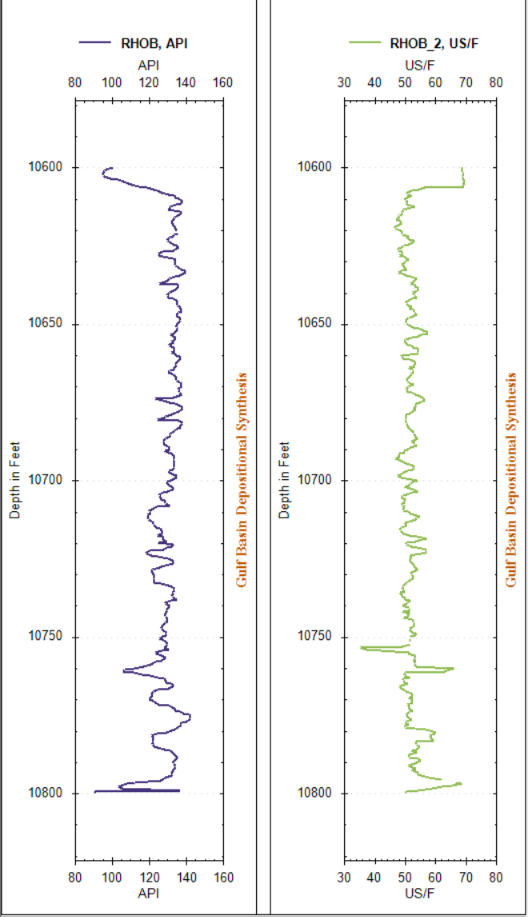

Full-service from start to finish
We handle the digitization process so your team can stay focused on interpretation and operations.

Well log digitization service
Transform physical well records into accessible digital assets. As low as $0.49 per curve per 100 feet, we handle the entire process from image to clean digital output.
Your well logs contain valuable data. We make that data easier to access, analyze, store, and use by converting physical records into clean digital output with a full-service workflow.
Why Log Digitizing
We handle the digitization process so your team can stay focused on interpretation and operations.
Whether you have one log or one hundred, we make it easy. We do the heavy lifting so you can focus on analysis.
How it works
Upload your scanned records or images.
We process the logs and convert them into clean digital output.
Get organized digital files that are easier to work with, store, and integrate into your workflow.
Pricing
As low as $0.49 per curve per 100 feet
We handle the entire process from image to clean digital output. Straightforward pricing for teams that want a hands-off solution.
Get a QuoteFull-service digitization from uploaded images to clean digital output.
Project calculator
Choose a project type, then enter a rough log count, footage per log, and curves per log. Small batch work qualifies for the $0.49 per curve per 100 feet rate. Single logs have a $29.99 minimum, and large archives are priced by email.
Who it's for
Operators, geologists, engineers, brokers, data teams, and anyone working with physical well records that need to be converted into usable digital data.
Modern output
Physical well records can be difficult to manage and harder to use. Our service helps bring them into a modern workflow with cleaner, more accessible digital output.



Ready to digitize your well logs?